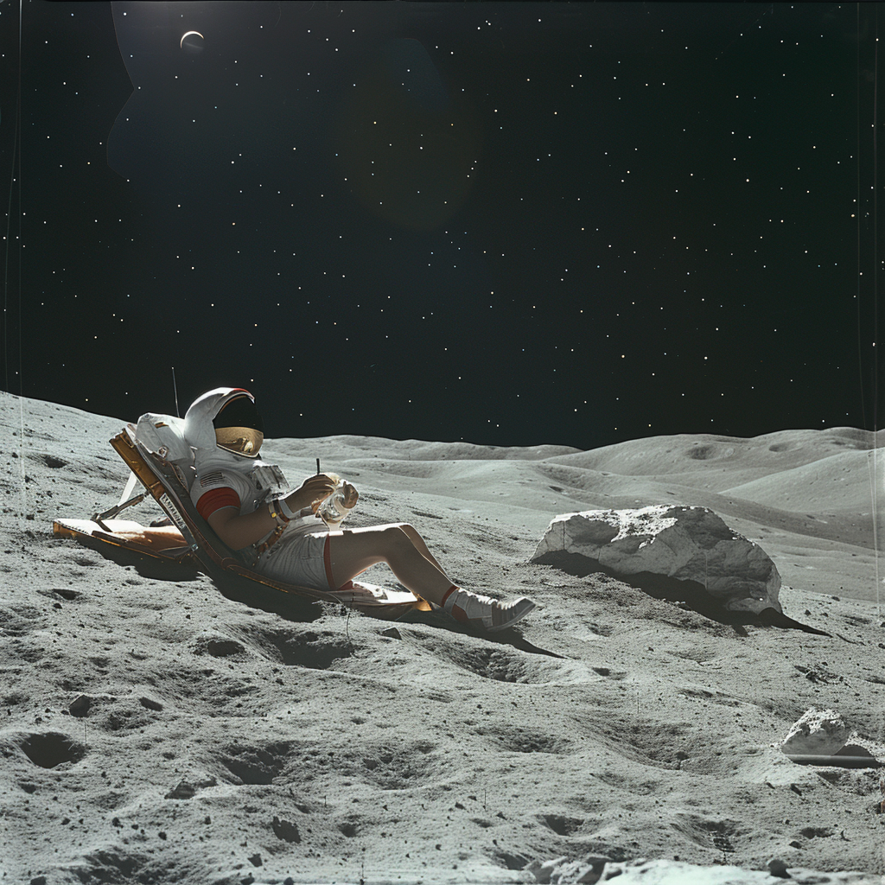

Introduction to Lunar Tourism and Healthcare

Tourism - Self-Sustained Hotel
A self-sustained lunar base designed for tourism, offering all amenities of a luxury hotel, plus medical facilities and logistics support.
Population: ~200-300 individuals (including guests and staff)
Surface Area Estimate: Approximately 5000 square meters
Total Surface Area Components:
- Living Quarters: Luxury suites and standard rooms for guests, private cabins for staff (~1500 sqm)
- Dining and Leisure: Restaurants, cafes, bars, and lounges (~1000 sqm)
- Recreational Facilities: Gyms, spas, swimming pools, sports facilities, and entertainment venues (~1000 sqm)
- Tourist Attractions: Lunar surface exploration, viewing domes, virtual reality experiences (~1000 sqm)
- Medical Facilities: Full-service hospital, emergency room, quarantine rooms (~500 sqm)
- Central Hub: Command center, administrative offices, and control room (~500 sqm)
- Hydroponic Gardens: For fresh food production and oxygen generation (~500 sqm)
- Logistics and Supply: Warehouses, storage tanks, docking facilities for supply ships (~500 sqm)
Social Structure:
- Daily events and activities for guests
- Cultural and social events to maintain morale and community spirit among staff
Sustainability:
- Advanced recycling systems for waste management
- Utilization of in-situ resources (ISRU)
- Renewable energy sources (solar, nuclear)